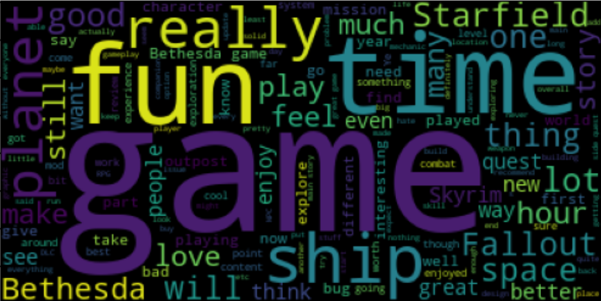
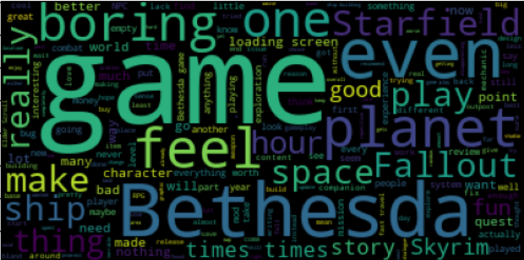

Introduction
This dataset is comprised of 5,000 Steam user reviews of the game Starfield. The data will be analyzed to determine the differences between positive and negative reviews. These differences will be measured using the data associated with each review, which can be found on the Steamworks Documentation. By default, the Steamworks API filters "off-topic" reviews that are a result of review bombing.
Using this data, I aimed to answer the question: What are the different characteristics of positive and negative Steam reviews?
For reference, here is my Jupyter Notebook and the full dataset .
Collecting Data
Based on
this guide by Andrew Muller,
I scraped 5,000 of the most recent Steam reviews for the game Starfield.
I selected the game Starfield because it is a recent, high-profile game
with a good balance of positive and negative reviews. However, this code
can scrape any number of reviews from any game on Steam by inputting the
AppID into the get_n_reviews() function.
This function will return a JSON file of all n reviews and their fields.
The fields of each review can be found on the
Steamworks Documentation.
Cleaning Data
At this point, the data cleaning process had already begun in the data collection phase. When scraping the data, I was able to set multiple parameters through Steamworks. For example, I had excluded any non-English reviews and reviews from people who had received the game for free. The rest of the data cleaning process was fairly trivial because of this. Since Steamworks autogenerates the metadata for each review, the data was well-structured and free of null values. Furthermore, I flattened subfields into their own column when converting the JSON to a CSV for easier parsing.
To finish the cleaning process, I dropped any fields that were redundant,
such as the language field, or irrelevant, such as the reviewer's SteamID.
I was able to narrow down the number of fields from 22 to 7.
Data Exploration
I used boxplots, scatterplots, and word clouds to visualize and derive patterns from the data. I categorized the data visualizations into three groups: interaction data, author data, and review data.
Each review has the following fields:
voted_up, where True indicates a positive review
and False indicates a negative review;
votes_up, indicating the number of users who like the review;
weighted_vote_score, which represents the user-rated "helpfulness"
of the review on a weighted scale;
num_reviews, indicating the number of reviews that the author has
written (with game per review);
playtime_at_review, indicating the number of minutes the author
had spent in Starfield at the time the review was posted.
Interaction Data Visualizations
This category includes fields that represent how other users interacted with
each review. In this category, I compared votes_up and
weighted_vote_score to whether a review was positive or negative.

Author Data Visualizations
This category includes fields that represent the author of each review.
In this category, I compared num_reviews and
playtime_at_review to whether a review is positive or negative.
Review Data Visualizations
This category is comprised of the words in each review. I compared the most used words in negative reviews to most used words in positive reviews.
Positive reviews:
Negative reviews:
Data Analysis
The interaction data visualizations show that negative reviews are generally
more interacted with than positive reviews. Both the median
weighted_vote_score and number of votes_up are higher
in negative reviews. This speaks to Starfields' mixed-to-negative reception
from the Steam audience. However the difference in median weighted_vote_score
is much smaller between positive and negative reviews than the median number of
votes_up. Negative reviews appear to get far more votes_up
than positive reviews. The scatterplot also shows this difference, illustrating
that positive reviews are more likely to receive a higher weighted_vote_score
than a high number of votes_up.
The author data visualizations show that reviewers who post negative reviews are more likely to have posted reviews from many other games. This could illustrate that people who are more critical of a game's quality are more likely to speak up about their experience. This data also reveals that, as expected, reviewers who reviewed Starfield positively played more of the game at the time of review.
The words in the positive review word cloud that stuck out to me were "story", "combat", "weapon", and "explore". These could indicate what reviewers most enjoyed about the game. However, I also noticed the word "issue" was present in the word cloud. This may reveal that reviewers were willing to acknowledge some of the game's shortcomings while still praising its strengths. Some of the more interesting words in the negative review word cloud include "loading screen", "Bethesda game", "Fallout", and "Skyrim". The first phrase, "loading screen", seems to be alluding to a common critique of Starfield's frequent use of loading screens to transition between sections of the game. It seems that this use of loading screens is a common issue for detractors of the game. The other three phrases, "Bethesda game", "Fallout", and "Skyrim" refer to the game's developer and their previous successful IPs. It seems that negative reviewers could be comparing Starfield to some of Bethesda's more well-received games such as The Elder Scrolls V: Skyrim and some of the games from the Fallout series.
Conclusion and Impact
While I think that, overall, the correlations in this dataset are relatively weak, I think that more interesting results can be found with more advanced methods. I imagine that the reviews themselves could be used to train a machine learning algorithm to classify and summarize reviews. However, this hypothetical algorithm would need to be carefully tuned so as to not mislead consumers.
I think it is important to take these results with a grain of salt. Especially in the case of the word clouds, it is easy to make unjustified conclusions about Starfield and its reception. For example, I needed to understand the context of Bethesda and their games to understand why negative reviews mentioned Skyrim and Fallout so often.